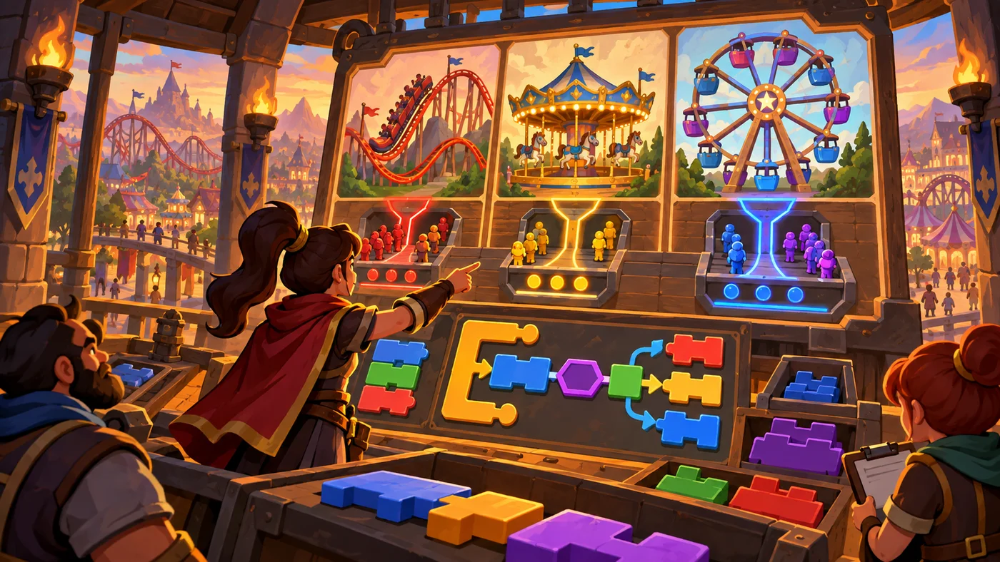
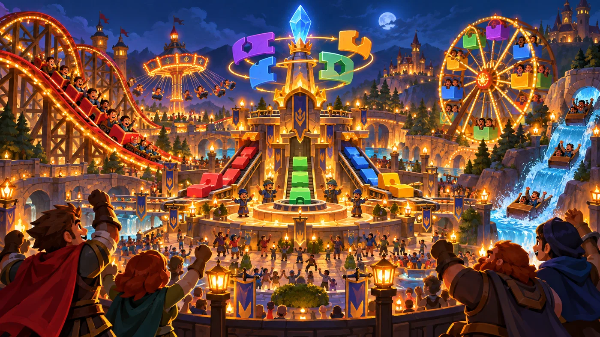
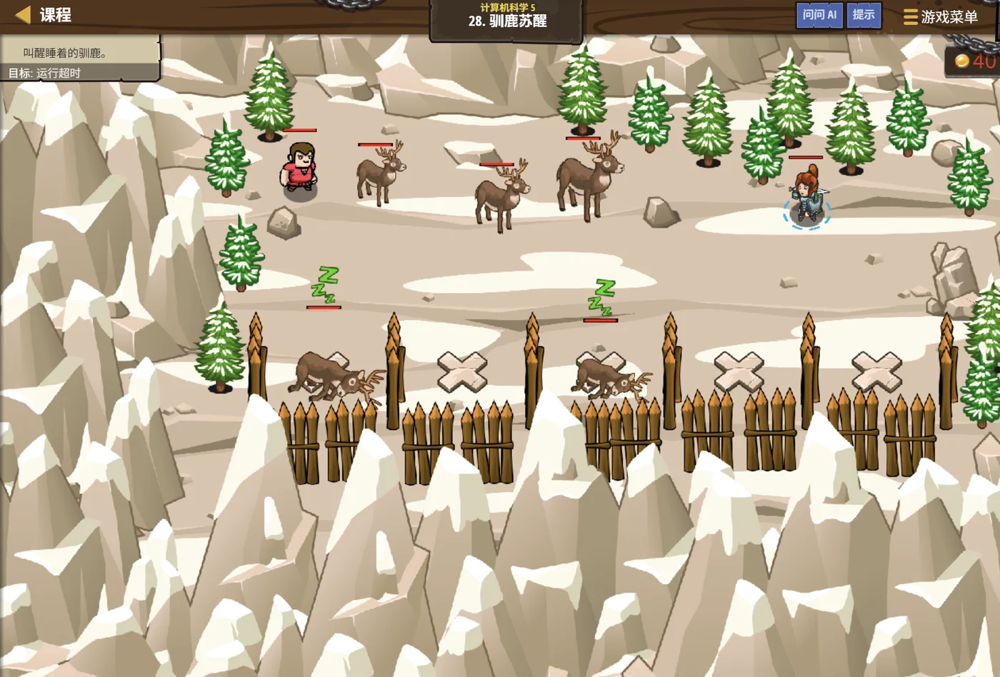

扣哒考级 · GESP 图形化 四级 · 第 6 单元 | 机械乐园 COGWHEEL PARK
乐园总调度 综合应用
Putting It All Together

戈登
机械师 · 你的向导
夜幕降临，乐园中央的总调度台亮了起来。控制面板上，
过山车、旋转木马、摩天轮的状态一个个跳动起来——它们各就各位，有序运转。
调度员转过身："这么多事，我从来不是一起做完的。 我把它们拆成一件件，一件件做对，最后拼起来。"
调度员转过身："这么多事，我从来不是一起做完的。 我把它们拆成一件件，一件件做对，最后拼起来。"
戈登 · 机械师
最后一单元，考的是"综合应用"。做题的套路只有一套：读题 → 拆成几件小事 → 每件挑一个工具（列表？函数？排序？模拟？）→ 分块做、分块测 → 拼起来。
0 单元导语与目标
Before We Start
0.1 学习目标
- 掌握综合题的解题流程：拆任务 → 挑工具 → 分块实现 → 分块调试；
- 会把列表、函数、克隆、广播、排序、模拟组合起来用；
- 会设计"多个角色协同工作"的程序结构；
- 会分批调试，能判断"该先查哪一块"；
- 能比较同一个任务的两种做法，选择更合适的那个。
0.2 考纲对照
| 考纲知识块 | 考纲要求 | 本单元小节 |
|---|---|---|
| 6 综合应用 | 对已学知识点的综合应用考察 | 1.1～1.2、2.1～2.3、3.1～3.3、4.1～4.2 |
| （知识点详述第 6 条） | 掌握程序的模块化搭建方法，具备在实际解决方案设计过程中对算法的综合应用能力；具备一定的程序调试和优化能力 | — |
这是四级的最后一单元，也是整册的"总复习"。' '它不教新东西，只教你怎么把学过的零件拼成一台能用的机器。
1 综合题怎么下手
How to Start
1.1 第一步：把任务拆开
乐园中央立着一座总调度台。巨大的控制面板上同时显示着过山车、旋转木马和摩天轮的状态—— 调度员说："这么多事情，我从不一起想。我只想"现在该动哪一个"。"

assets/illustrations/scratch-L4-06-01_park_dispatch.webp
【配图位】乐园中央总调度台上，巨大的发光控制面板同时显示过山车、旋转木马与摩天轮的运行状态，调度员在指挥。（提示词见《GESP配图清单与AI绘图提示词》第四节 4-6）
图 2（SVG）：综合题的四步走
1.2 第二步：给每一小块挑工具
| 要做的事 | 该找谁 | 来自哪一单元 |
|---|---|---|
| 要记住一串数据 | 列表 | 三级 · 书页清单 |
| 同一段动作要反复用 | 函数（自制积木） | 四级 · 万能机械臂 |
| 要很多个一样的东西 | 克隆 | 二级 / 三级 · 分身 |
| 多个角色要同时开始做事 | 广播 | 二级 · 传声筒 |
| 要按大小排好顺序 | 排序（冒泡 / 插入 / 选择） | 四级 · 排队过山车 |
| 不知道结果，得一步步演出来 | 模拟 | 三级 · 穷举之钥 |
打个比方：写综合题就像修一台机器——先看要修哪儿，再决定用扳手还是螺丝刀。
工具不是越多越好，而是"对症"才好。
工具不是越多越好，而是"对症"才好。
2 把学过的知识串起来
Connecting the Pieces
2.1 列表装数据 + 函数做模块
重点示例：一段"列表 + 函数"的典型写法
图形化积木
读法 列表负责装数据，函数负责把"排序"这件事打包；主脚本里只要写一次"给清单排序"
2.2 克隆 + 广播：多角色配合
图 3（SVG）：克隆与广播的搭配
2.3 排序 + 模拟：按顺序走一遍

assets/illustrations/scratch-L4-06-02_all_rides_glow.webp
【配图位】夜幕降临，乐园所有设施被同时点亮并有序运转，游客在广场上欢呼，镜头为广角夜景。（提示词见《GESP配图清单与AI绘图提示词》第四节 4-6）
重点示例：先排序，再按顺序模拟
图形化积木
要点 排序负责"理清顺序"，模拟负责"按顺序走一遍"——一个理，一个演，合起来就把任务做完了
3 大程序的模块化
Modularizing a Big Program
3.1 一个功能一个函数
图 5（SVG）：模块化搭建
3.2 用广播协调多个角色
重点示例：总调度台发一条广播
图形化积木
要点 用"广播并等待"发给所有角色，等大家把该做的事做完，调度台再继续——顺序就不会乱
3.3 主程序只是一份"目录"
一个检验标准：把主脚本读给别人听，他能不能听懂这个程序在干什么？
如果能——"先读数据、再排序、然后广播开始、最后播报结果"——说明你的模块化做得不错。
如果读出来是"先移动 10 步、再右转 90 度、再说你好……"，那说明还没拆到位。
如果能——"先读数据、再排序、然后广播开始、最后播报结果"——说明你的模块化做得不错。
如果读出来是"先移动 10 步、再右转 90 度、再说你好……"，那说明还没拆到位。
4 调试与优化
Debug and Improve
4.1 分块调试：先测小零件
图 6（SVG）：分块调试
4.2 换个办法做同一件事
图 7（SVG）：两种做法怎么选
这就是"优化能力"：同一个任务，能用两种方法做出来，并且说出哪种更好——这正是四级考纲里"能评价同一任务的不同实现方法"的意思。
5 代码实战
Level Practice
最后一关把整册的东西合在一起：列表装名单、函数做模块、' '广播喊开工、按顺序依次行动。
关卡
驯鹿苏醒
进入关卡 →
故事：
乐园北侧的驯鹿雕像沉睡了很久。传说只要按"正确的顺序"唤醒它们，
整座乐园就会重新亮起来——顺序错一个，就醒不过来。

assets/stages/py-L4-06-stage1_reindeer_wake.webp
【关卡截图位】请把《驯鹿苏醒》的游戏画面截图放到此处（放入 assets/stages/ 目录，文件名为 py-L4-06-stage1_reindeer_wake.webp）。
思路：先把要做的事拆成三件：读名单 → 排序 → 依次唤醒。
每件事做成一个函数，主脚本只留三行调用。
这就是模块化：主脚本读起来像一份目录。
重点示例：主脚本只有三行
图形化积木
"依次唤醒"的定义
读法 主脚本三步（读名单、排序、依次唤醒）+ 一句播报；细节都在"依次唤醒"的定义里
自己试一试：把三个函数里的积木全部展开塞进主脚本，程序照样能跑。但那样你还能一眼看出"这个程序分了三步"吗？这就是模块化的价值。
这一关是整册的收口：' '列表装数据、函数做模块、排序理顺序、' '广播喊开工、模拟演过程——五样东西各司其职。
四级通关的一句话：看到一道大题，不要急着写积木——先把它说清楚，再把它拆开，然后一件件做对，最后拼起来。
去扣哒世界闯这一关 →
6 常见陷阱
Common Traps
陷阱 1：一上来就写积木，不拆任务。写到一半发现"还有一件事没做"，只能回头重来。
正确做法：先用中文把任务列成三到五件小事。
正确做法：先用中文把任务列成三到五件小事。
陷阱 2：所有角色共用一个"自己的变量"。需要共享的数据用适用于所有角色，需要各记各的用克隆体私有。
正确做法：新建变量时就选对作用域。
正确做法：新建变量时就选对作用域。
陷阱 3：该用"广播并等待"的地方用了普通广播。结果后面的步骤提前开始，顺序乱了。
正确做法：需要"等大家做完再继续"就用并等待。
正确做法：需要"等大家做完再继续"就用并等待。
陷阱 4：全部做完才运行一次。一旦结果不对，几十块积木里根本不知道从哪儿查起。
正确做法：做一个函数就测一次；出错时优先怀疑"最近改过的那一块"。
正确做法：做一个函数就测一次；出错时优先怀疑"最近改过的那一块"。
7 题目练习
Practice
第 1 题改编自 2026 年 6 月 · 图形化编程 四级 第 14 题，其余为原创练习题。
改编自 2026 年 6 月 · 图形化编程 四 级 · 第 14 题单选题
有一个 n 行 n 列的数字网格（行号、列号均从 1 开始，n = 5 时的网格如图所示）。
现在要统计所有位于主对角线（行号等于列号）和副对角线（行号加列号等于 n + 1）上的格子数量，重叠的格子只记一次。
执行程序并输入整数 6，小猫说出的内容是（ ）。
现在要统计所有位于主对角线（行号等于列号）和副对角线（行号加列号等于 n + 1）上的格子数量，重叠的格子只记一次。
执行程序并输入整数 6，小猫说出的内容是（ ）。
A.11
B.12
C.13
D.14
B.12
C.13
D.14
查看答案与详解
答案：B。这道综合题要做三件事：
① 遍历整个网格——两层嵌套循环（行一层、列一层）；
② 判断每个格子是否在两条对角线上——主对角线看
③ 计数——符合条件就给计数器加 1。
当 n = 6 时：主对角线 6 格、副对角线 6 格，而两条对角线会在中心重叠（n 为偶数时中心是 4 个格子两两重合），按"重叠只记一次"去掉重复，结果是 12。
要点："重叠只记一次"就是提醒你不要在两条对角线的判断上重复计数——这种"重复要排除"的陷阱，是综合题最爱设的。
对应小节2.1、2.3 排列组合式的综合统计。
① 遍历整个网格——两层嵌套循环（行一层、列一层）；
② 判断每个格子是否在两条对角线上——主对角线看
行 = 列，副对角线看 行 + 列 = n + 1；③ 计数——符合条件就给计数器加 1。
当 n = 6 时：主对角线 6 格、副对角线 6 格，而两条对角线会在中心重叠（n 为偶数时中心是 4 个格子两两重合），按"重叠只记一次"去掉重复，结果是 12。
要点："重叠只记一次"就是提醒你不要在两条对角线的判断上重复计数——这种"重复要排除"的陷阱，是综合题最爱设的。
对应小节2.1、2.3 排列组合式的综合统计。
原创练习题单选题
面对一道复杂的综合编程题，下面哪种做法最合理（ ）。
A.先按拆好的小任务逐个实现，每做好一块就单独测一次
B.把所有积木一次性写完，最后统一运行
C.先写主脚本，细节以后再说
D.把三个函数里的积木全部展开写进主脚本，省得跳来跳去
B.把所有积木一次性写完，最后统一运行
C.先写主脚本，细节以后再说
D.把三个函数里的积木全部展开写进主脚本，省得跳来跳去
查看答案与详解
答案：A。这就是考纲要求的"模块化搭建 + 调试能力"：拆开、分块做、分块测、最后联调。
B 错：出错时无法定位；
C 错：细节没想清楚，主脚本也写不准；
D 错：展开之后程序会又长又乱，反而失去了函数带来的"好读、好改、好调"。
对应小节1.1、4.1 综合题的解法。
B 错：出错时无法定位；
C 错：细节没想清楚，主脚本也写不准；
D 错：展开之后程序会又长又乱，反而失去了函数带来的"好读、好改、好调"。
对应小节1.1、4.1 综合题的解法。
原创练习题单选题
要让总调度台"等所有角色都准备完毕，再开始下一步"，应该使用哪块积木（ ）。
A.广播 开始
B.广播 开始 并等待
C.当接收到 开始
D.一直重复
B.广播 开始 并等待
C.当接收到 开始
D.一直重复
查看答案与详解
答案：B。"广播并等待"会先等所有收到消息的脚本执行完，再继续往下——正好用来保证"顺序不乱"。
A 错：普通广播喊完就走，后面的步骤可能抢在前面；
C 错：那是接收方用的积木；
D 错：和"等待"没有关系。
对应小节3.2 用广播协调多个角色。
A 错：普通广播喊完就走，后面的步骤可能抢在前面；
C 错：那是接收方用的积木；
D 错：和"等待"没有关系。
对应小节3.2 用广播协调多个角色。
原创练习题多选题
关于"用函数把程序模块化"，下面说法哪些是正确的（ ）。
A.主脚本读起来像一份"目录"，能一眼看出整体做了哪几步
B.出错时可以只单独测试某个函数，缩小排查范围
C.要修改某个功能的细节，通常只需要改对应的那个函数
D.模块化之后，程序的运行速度一定会明显提高
B.出错时可以只单独测试某个函数，缩小排查范围
C.要修改某个功能的细节，通常只需要改对应的那个函数
D.模块化之后，程序的运行速度一定会明显提高
查看答案与详解
答案：A、B、C。
D 错：模块化主要改善的是"可读性、可改性和可调试性"，程序实际执行的工作量和原来一样，并不会因此跑得更快。
对应小节3.1、3.3、4.1 模块化与调试。
D 错：模块化主要改善的是"可读性、可改性和可调试性"，程序实际执行的工作量和原来一样，并不会因此跑得更快。
对应小节3.1、3.3、4.1 模块化与调试。
原创练习题单选题
程序运行后结果不对。按照"分块调试"的思路，最应该先怀疑的是（ ）。
A.所有函数都重新写一遍
B.最近改动过、或还没单独测过的那一块
C.直接换一种算法重做
D.把整个程序删掉重写
B.最近改动过、或还没单独测过的那一块
C.直接换一种算法重做
D.把整个程序删掉重写
查看答案与详解
答案：B。分块调试的关键是"缩小范围"：先怀疑最近改过、或者还没单独验证过的那一块，单独调用它测一次就能确认。
A、C、D 错：都是"推倒重来"的做法，既浪费时间，也可能把原本正确的部分弄坏。
对应小节4.1 分块调试。
A、C、D 错：都是"推倒重来"的做法，既浪费时间，也可能把原本正确的部分弄坏。
对应小节4.1 分块调试。
原创练习题判断题
在图形化编程中，同一个任务用"按顺序挨个处理"和"先排序再处理"两种办法都能完成，它们的结果相同，但花费的步骤可能相差很多。（ ）
查看答案与详解
答案：正确（√）。这正是"评价同一任务的不同实现方法"的典型场景：
两种做法都能得到正确结果，但"先排序"虽然开头麻烦一点，之后的每一步都能省下大量比较——数据越多，差距越明显。
所以评价算法不能只看"对不对"，还要看"费多少步"。
对应小节4.2 换个办法做同一件事。
两种做法都能得到正确结果，但"先排序"虽然开头麻烦一点，之后的每一步都能省下大量比较——数据越多，差距越明显。
所以评价算法不能只看"对不对"，还要看"费多少步"。
对应小节4.2 换个办法做同一件事。
8 本单元小结
Unit Summary
戈登 · 机械师
四级到这里就通关了。最后送你一句话：看到大问题别急着写——先拆开、再挑工具、分块做对、最后拼起来。
检验标准只有一条：主脚本读出来，像不像一份目录？
你在调度台上学到了什么
- 四步解法：读题 → 拆任务 → 挑工具 → 拼装；
- 工具对照：记数据用列表、反复用函数、要分身用克隆、要同时动作用广播、排队用排序、演过程用模拟；
- 模块化：一个功能一个函数，用广播协调角色，主程序只留"目录"；
- 调试：分块做、分块测，先怀疑最近改过的那一块；
- 优化：同一个任务的不同做法可以比较——先看对不对，再看花多少步。
四级通关，你已经会写完整的程序了
从一级的"让角色动起来"，到四级的"用函数搭建一座会运转的乐园"——
你已经把图形化编程的核心知识全部走完了一遍。
接下来无论学 Python 还是 C++，思路都是相通的：
拆问题、选工具、写模块、调错误。
四级通关，你已经会写完整的程序了
从一级的"让角色动起来"，到四级的"用函数搭建一座会运转的乐园"——你已经把图形化编程的核心知识走完了一遍。接下来无论学 Python 还是 C++，思路都是相通的。
加入扣哒世界，把这条考纲之路走一遍 →